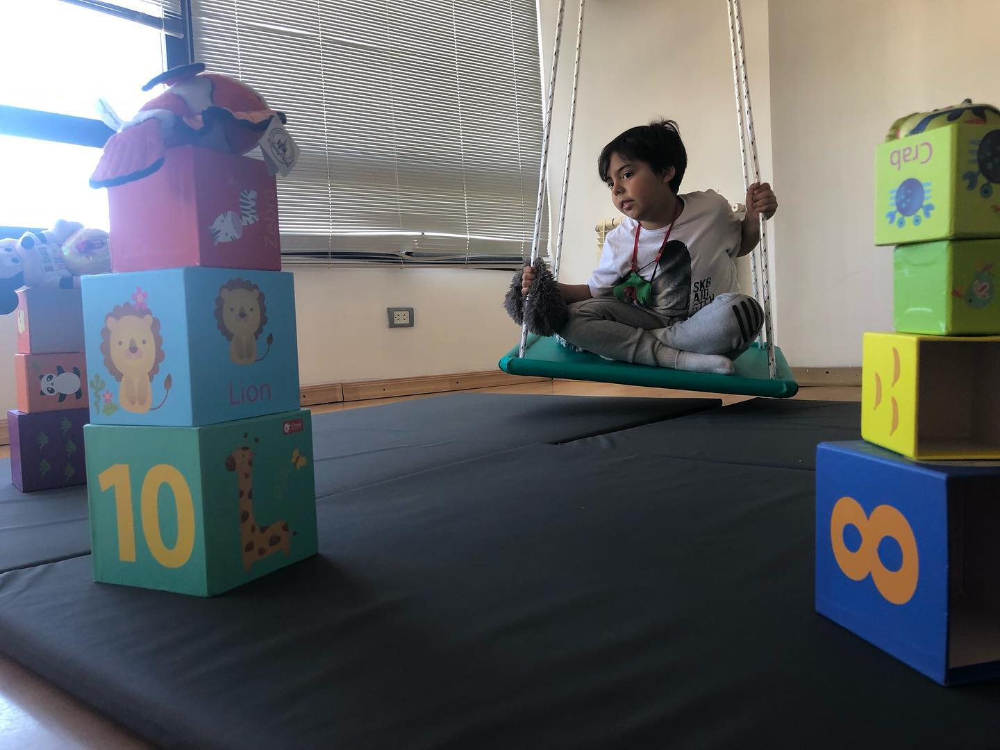

Universo T.O.
Integrando sensaciones ü߆
Incorporar una actividad visual, mientras desafiamos al sistema vestibular (balance y
movimiento), es una buena manera de mejorar las habilidades de procesamiento sensorial.
Además disfrutamos con amigos! üë©‚Äçüëß‚Äçüë¶
‚òùüèªTip sensorial: para ni√±os sensitivos al tacto asegurate que ellos est√©n en
control
del input que están recibiendo. Esto puede incluir una toalla cerca para limpiarse o
utilizar
herramientas para que la piel no entre en contacto directo con la textura (por ejemplo,
cepillos, utensilios, juguetes). üòâ
ü߆Papás en terapiaü§ó
Conocer el perfil sensorial, brindar interacciones sensorio afectivas acordes a él y
SINTONIZAR
con manera EMPATICA con el TONO EMOCIONAL del niño son los primeros pasos para ayudarlos a
construir su AUTOREGULACION emocional.
Incluyamos a los padres en las sesiones, brindemos herramientas para saber qué hacer en casa
cuando las cosas no salen bien!
üí°Componentes de la escritura...
✏️Trabajando escritura sin escribir
Una mañana de lunes llena de desafíos!
ü§∏üèΩControl postural
⇶⇶ Audición y visión
1 Números y cantidades
Selectividad alimentaria. Con la comida SI se juega.
Ideación + planificación motora.
lleno de nuevas ideas y su ejecución motora estuvo on point!
cuando en el juego se plantea el desafío justo, no aparecen signos de desregulación…
Nos encantan las alturas!!! Y desaparecer entre las “nubes” de Focus on Kids!

Coordinaci√≥n viso motora üëÅ‚Äçüó®
Ayudando a papá Noel a repartir regalos por los edificios de Nemo y otros amigos! üéÅüöö
 Momentos üíõ
Los consultorios de Focus on Kids no son de ningún profesional, son de los niños que,
guiados
por sus necesidades sensoriales seleccionan los espacios. Los profesionales planifican y
estructuran las sesiones, buscando el desafío justo para cada niño.
Momentos üíõ
Los consultorios de Focus on Kids no son de ningún profesional, son de los niños que,
guiados
por sus necesidades sensoriales seleccionan los espacios. Los profesionales planifican y
estructuran las sesiones, buscando el desafío justo para cada niño.